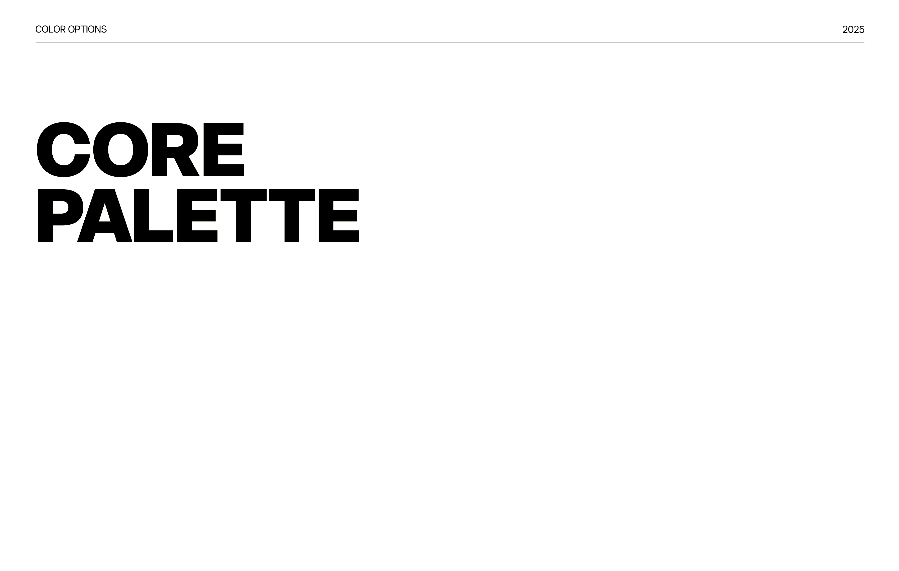

DE KLANT
Stoneborn Technologies bouwt AI/agent-native operations platforms voor financial services. Ze combineren deep understanding van agentic AI met re/insurance operations om naadloze software te creëren die beide werelden verbindt.
ONZE AANPAK
Voor een tech-startup die AI en financial services combineert, ontwikkelden we een complete visuele identiteit die vertrouwen, innovatie en precisie uitstraalt.
Logo Systeem
Meerdere logo-opties die kracht en betrouwbaarheid communiceren, passend bij de fintech/insurtech sector.
Color System
Uitgebreid functioneel kleurensysteem met core palette, functional colors, backgrounds en shading voor zowel light als dark mode.
Typografie
Complete typografie hiërarchie van Thin tot Black, ontworpen voor zowel marketing als product UI.


RESULTAAT
Een complete brand identity die Stoneborn positioneert als een serieuze, innovatieve speler in de AI-driven financial services markt. Het design systeem is schaalbaar en direct toepasbaar in hun product UI en marketing materialen.
PROJECT SCOPE
Productie: sircle.agency
Creative director: Sebastiaan Vreeken